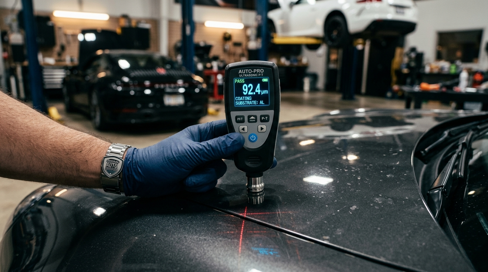

Inspeksi Mobil Bekas Independen: Wilayah Bali
Inspektor berlisensi BNSP memeriksa 152 titik fisik dan digital langsung di lokasi penjual: kelurusan sasis tiang utama, ketebalan cat per panel dengan sensor ultrasonik, riwayat rendaman banjir, hingga scanning komputer transmisi OBD-II. Laporan digital terbit maksimal 24 jam.

| Struktur Rangka & Apron Sasis | Simetris / Lulus Uji |
| Indikasi Korosi Garam & Rendaman Banjir | Bersih / Bebas Kerak |
| Sistem Komputer ECU & Transmisi | 0 Fault Code |
| Ketebalan Cat Fender Depan Kanan | Re-spray 240 µm |
| Keabsahan Nomor Mesin vs Samsat Bali | Identik & Sah (Plat DK) |
Pemeriksaan Fakta vs Tampilan Kasat Mata
Showroom dapat memoles cat hingga berkilau dan menyemprotkan pewangi kabin. Namun instrumen kami menguji riwayat tersembunyi hingga ke sasis apron, jeroan mesin, residu lumpur banjir, dan log komputer transmisi.
Di showroom, mobil tampak sempurna dari luar. Bodi lurus, celah bumper tertutup rapi, dan polesan eksterior mengilap memberi ilusi bahwa mobil bebas insiden.
Pemeriksaan fisik sasis menemukan bekas tarikan hidrolik pada apron kanan depan dan las titik robotik pabrikan yang hilang digantikan las karbit manual.
Memverifikasi keaslian las titik robot pabrikan pada tiang pilar kabin untuk memastikan bodi belum pernah dipotong atau disambung las ketok.
Sensor ultrasonik memetakan batas antara cat asli pabrik (80 - 130 µm) dan dempul tebal (> 250 µm) yang dicat ulang secara kosmetik.
Membaca getaran saat cold start, kestabilan tekanan oli, dan mendengarkan ketukan abnormal timing chain atau ring piston yang aus.
Membongkar riwayat jarak tempuh riil yang tercatat di transmisi dan memeriksa status error tersembunyi modul airbag serta ABS.
Database Pengetahuan Cacat Kronis
Tiap model mobil memiliki kelemahan unik pabrikan yang kerap ditutup-tutupi. Pilih mobil incaran Anda untuk melihat fokus diagnosa inspektor kami.
Instrumen Pengujian Lapangan
Inspektor zalInspection dibekali instrumen diagnostik digital terkalibrasi untuk membongkar cacat tersembunyi yang ditutup polesan bodi.
Mendeteksi dempul pasca tabrakan keras di balik cat mulus. Mengukur ketebalan mikron seluruh 36 panel bodi.
Akurasi Sensor: ±1 µmMembaca freeze-frame error yang sengaja dihapus sesaat, verifikasi log jarak tempuh transmisi, dan modul airbag.
Live ECU Data Stream QueryMemeriksa kerak ruang bakar busi, sela rongga sasis tertutup, dan residu lumpur banjir di balik konsol dashboard.
Probe Fleksibel Kamera Mikro HDMenguji kadar air minyak rem dan konsentrasi pendingin radiator untuk mengantisipasi potensi mesin overheat.
Boiling Point & Moisture %Pilih salah satu panel mobil di bawah ini untuk melihat bagaimana sensor ultrasonik kami membedakan cat asli pabrik, pengecatan ulang kosmetik, dan dempul perbaikan tabrakan.
Ketebalan berada pada rentang standar robot perakitan pabrik. Tidak ada indikasi pembongkaran panel atau perataan dempul.
Pemeriksaan Komprehensif
Setiap mobil melewati checklist terstandarisasi yang dicatat secara langsung ke sistem pelaporan digital kami, bukan sekadar perkiraan sepihak.
Standar Operasional Prosedur
Setiap unit diuji menurut alur teknis berstandar industri demi akurasi temuan yang objektif dan dapat dipertanggungjawabkan.
Pemeriksaan getaran dan suara mekanis mesin saat pertama kali dinyalakan dari temperatur dingin untuk mendeteksi keausan timing chain dan klep.
Pengukuran 36 titik panel bodi dengan micrometer gauge guna membongkar lapisan dempul dan ketidaksimetrisan las apron sasis.
Komunikasi komputer ECU transmisi dan mesin, verifikasi log jarak tempuh internal, serta riwayat sensor emisi dan airbag.
Pemeriksaan kebocoran seal transmisi, keausan bushing kaki-kaki, korosi struktur, dan residu lumpur banjir di rongga tersembunyi.
Uji pengereman mendadak ABS, kelurusan kemudi, serta pencocokan fisik nomor rangka (VIN) dan nomor mesin langsung pada BPKB dan STNK.
Alat Bantu Pembeli Mobil Bekas
Simulasikan harga penawaran mobil incaran Anda. Pilih potensi temuan cacat untuk menghitung estimasi biaya perbaikan dan rekomendasi harga tawar yang realistis.
Pilih Temuan Cacat Umum Hasil Inspeksi:
Dengan biaya inspeksi mulai Rp 550.000, Anda memiliki bukti foto dan laporan fisik otentik untuk menawar harga mobil secara rasional.
Konsultasikan Hasil Nego ke WhatsAppStudi Kasus Investigasi Lapangan
Berikut adalah contoh temuan teknis lapangan dari unit yang hampir dibeli oleh klien kami di Bali sebelum diverifikasi oleh tim zalInspection.
Tarif Transparan Tanpa Biaya Tersembunyi
Satu temuan cacat tersembunyi seperti bekas tabrak sasis, rendaman banjir, atau manipulasi odometer nilainya jauh melampaui biaya inspeksi.
Cocok untuk City Car & MPV Harian
Rp 550.000 / unit
Semua Jenis dan Kategori Mobil
Rp 750.000 / unit
Proteksi Penuh Mobil Lolos Uji
Rp 1.900.000 / unit
Jaminan Kualitas Kendaraan
Sebagai bukti ketelitian inspeksi kami, unit yang memenuhi standar lolos uji zalInspection dapat diproteksi garansi mesin dan transmisi hingga 1 tahun.
Perlindungan mesin utama dan transmisi otomatis selama satu tahun penuh terhitung sejak tanggal terbit sertifikat.
Menanggung penggantian komponen mekanikal utama mesin, sistem pendingin oli, dan modul hidrolik transmisi matik.
Layanan derek darurat gendong (towing) dan jumper aki melayani seluruh wilayah Bali kapan pun diperlukan.
Klaim perbaikan dapat dilakukan di bengkel rekanan berlisensi tanpa prosedur birokrasi berbelit-belit.
Pertanyaan Yang Sering Diajukan
Penugasan Resmi Wilayah Bali
Lengkapi formulir permohonan inspeksi. Tim inspektor resmi bersertifikasi BNSP siap meluncur dari basis operasional kami di Tabanan dan Denpasar ke lokasi unit di seluruh Bali. Surat tugas terbit maksimal 30 menit.
Jika unit mobil berisiko diperebutkan pembeli lain hari ini, hubungi langsung koordinator lapangan kami melalui WhatsApp resmi.
Jalur Cepat WhatsApp ResmiRingkasan 5 Sektor Fisik dan Komputer: